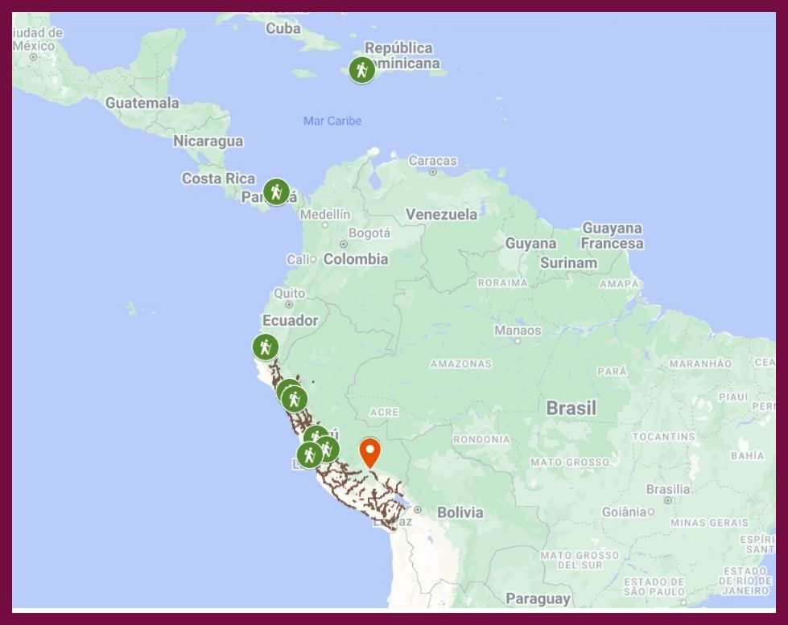
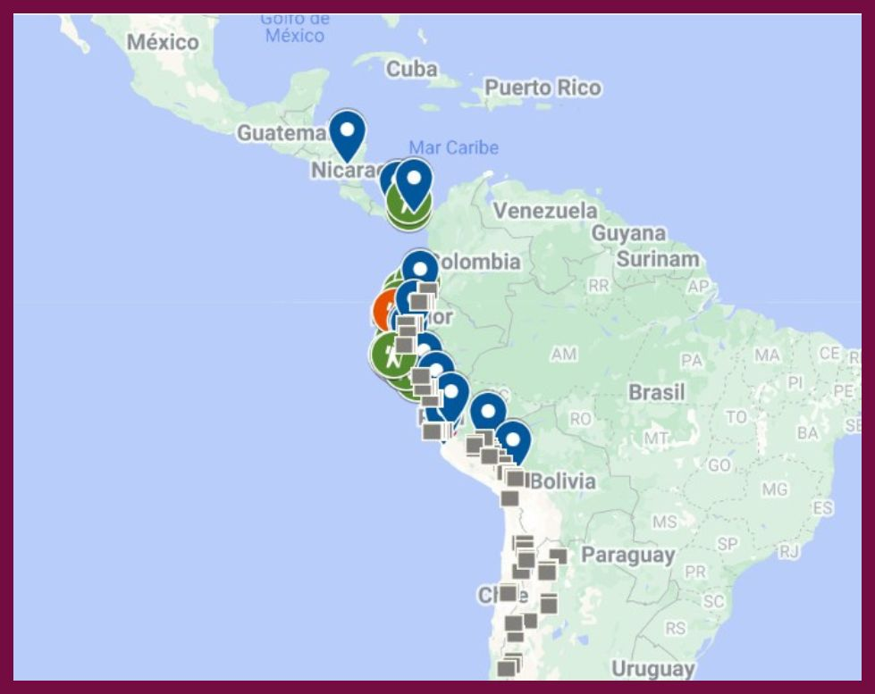
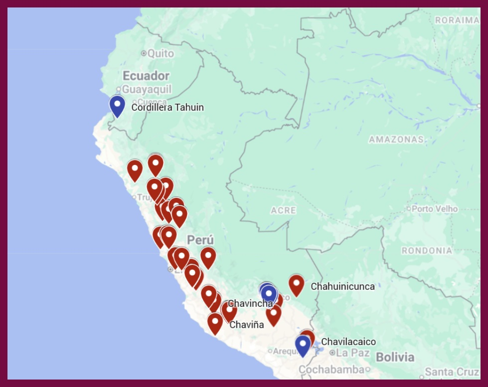

La Conquista del Perú [1534]. Edición de Raúl Porras Barrenechea. Primera edición. Lima: Biblioteca Abraham Valdelomar, Huacachina, 2014.

“Carta de Hernando Pizarro a la Audiencia de Santo Domingo. A los magníficos señores los señores oidores de la Audiencia Real de Su Magestad que residen en la ciudad de Sancto Domingo” en Biblioteca Peruana, Primera Serie, Tomo I, pp.117-132. Lima, Editores Técnicos Asociados, 1968.

“Verdadera relaçion de la conquista del Perú y provincia del Cuzco llamada la Nueva Castilla,...” en Las relaciones de la conquista del Perú, Colección de libros y documentos referentes a la historia del Perú, Comp. Horacio Urteaga, Tomo V, Lima, 1917, 1-76 y 103-121.

Mapa Topónimico: chavi-